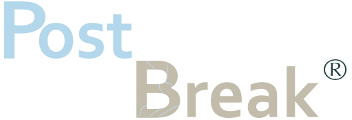

Somos una agencia de diseño gráfico orientada al área multimedial. Nuestra tarea es realizar piezas gráficascon el fin de comunicar lo que vos estés planificando hacer. A la hora de abordar un proyecto confiamos en la capacidad individual de cada integrante, pero a su vez también proponemos las conferencias nutritivas en donde ponemos a prueba cada trabajo y confirmar su funcionalidad. En post break creemos que un espacio de trabajo que prioriza la salud mental de sus empleados es aquel que permite desarrollar ideas positivas y siempre acertadas. Como dice el refrán, y también es nuestro lema: sin prisa, pero sin pausa. Por eso, contamos con asesoría psicológica, un parque recreativo en nuestra agencia y, por sobre todas las cosas, comunicación escencial entre cliente-diseñador para poder armonizar el trabajo en equipo. En esta web te invitamos a saber más sobre quienes forman parte de esta agencia.
¡Hola! soy Dolores Barrueco, una apasionada por la comunicación y las diferentes vías que pueden utilizarse para expresar algo. Esa fue la razón por la que quise estudiar diseño gràfico. Actualmente estoy estudiando en Escuela Da Vinci, orientando mis objetivos al área multimedial. En lo profesional, me identifico siendo una persona que busca que el cliente pueda explotar la identidad del proyecto al máximo.
Mi nombre es Moria Casan, soy diseñadora gráfica hace 20 años y fotógrafa hace 30. La fotografía me formó para estar constantemente buscando el equilibrio de las cosas, entender su estructura de base, su espina, para luego decidir si podemos romper con todo eso o no. Me caracteriza la pasión por el arte y la utilización de éste área para fines tanto lúdicos como funcionales. La combinación de ambas es lo que hace a mi identidad.
Estudiar en Escuela Da Vinci nos aportó varios conocimientos que impulsaron nuestra creatividad y talento. Esto nos dió las herramientas para poder diseñar la identidad de tu marca en su totalidad, nos dió una maestría en retoque fotográfico y el espíritu de querer seguir ampliando nuestras capacidades. Proponemos la comprensión del cliente respecto a cuestiones de colorimetría, confiando en que el conocimiento y la conexión entre vos y los colores pueden llevar tu marca a otro nivel. Si bien priorizamos el diseño digital, nunca descartamos las posibilidades que nos brinda lo manual. Sabemos cuándo utilizar cada técnica y cómo combinarlas.
Si te interesa nuestra propuesta y queres trabajar con nosotros,
hacenos saber llenando este formulario. Debajo te dejamos nuestro teléfono
y mail disponibles de Lunes a Viernes de 8 a 20hs en caso de tener alguna consulta.
barruecodolores@gmail.com
+54 49570373